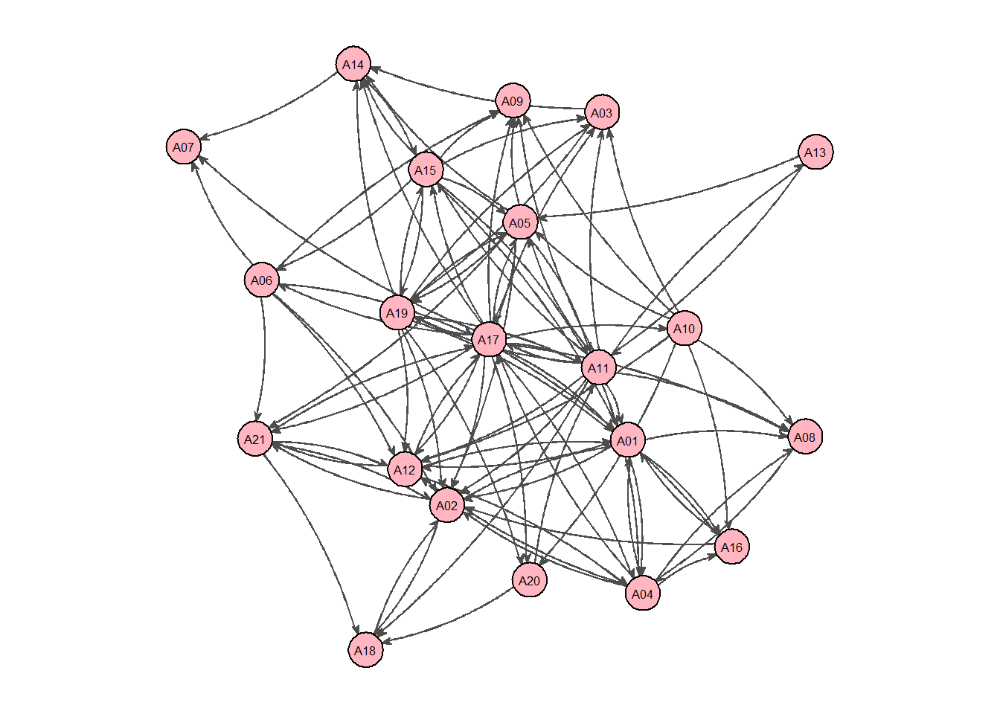
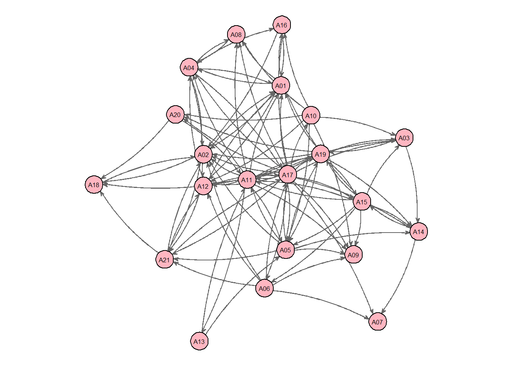

Chapter 17 Centrality Measures
17.1 Scientists example
library(sna)
# SCIENTISTS COLLABORATION
BS504Cx<-as.matrix(read.csv("datasets/Borgatti_Scientists504_Collaboration.csv",
stringsAsFactors=FALSE, row.names=1))
# Pick only those who have at least 3 collabs
BS504C<-(BS504Cx>3)
# Plotting the collaborations
par(mar=c(0,0,0,0))
gplot(BS504C,
gmode="graph",
#layout
mode="kamadakawai",
jitter=F,
#ties
edge.col="grey80",
edge.lwd=.1,
#nodes
vertex.col="cornflowerblue",
vertex.cex=.75)# Inserting attributes
BS504Attr<-read.csv("datasets/Borgatti_Scientists504_Attributes.csv",
stringsAsFactors=FALSE, row.names=1)
Tenure<-(BS504Attr$Years) # Years attribute
TenureA<-(round(10*(Tenure)/max((Tenure)))) # Normalizing years
colfunc <- colorRampPalette(c("#B78FB3", "#22BFAC")) # color palette
COLWB<-colfunc(7) # 7 colors
vertex_color = ifelse(TenureA %in% c(5,6),COLWB[6],
ifelse(TenureA>=7, COLWB[7],COLWB[TenureA+1]))
par(mar=c(0,0,0,0))
gplot(BS504C,
gmode="graph",
#layout
mode="kamadakawai",
jitter = F,
#ties
edge.col="grey80",
edge.lwd=.2,
#nodes
vertex.col=vertex_color, # color
vertex.cex=1,#1+.7*(2-BS504Attr$Sex),
vertex.sides=BS504Attr$Sex-1*47+3)
legend("topright",
legend = c("Colors"," Senior", " Junior", " ","Shapes", " Male", " Female"),
col = c("white","#B78FB3","#22BFAC","white","white","black","black"),
bty = "n",
pch =c(19,19,19,19,19,19,18),
pt.cex = c(0,2.1,2.1,0,0,1.7,1.9),
cex = 1,
text.col = "grey10",
horiz = F ,
inset = c(0.01))
17.2 Florentine Families
# FLORENTINE FAMILIES
PFM<-as.matrix(read.csv("datasets/Padgett_FlorentineFamilies_Marriage.csv",
stringsAsFactors=FALSE, row.names=1))
PFMn<-as.network(PFM, directed=F)
gplot(PFMn,
gmode="graph",
#layout
mode="fruchtermanreingold",
jitter=F,
#ties
edge.col="grey80",
#nodes
vertex.col="cornflowerblue",
#labels
displaylabels=T,
label.pos=1,
label.cex=.8)
# Add attributes file and use wealth to change size of nodes (vertex.cex)
PFA<-read.csv("datasets/Padgett_FlorentineFamilies_Attributes.csv",
stringsAsFactors=FALSE, row.names=1)
# Color palette
n_colors<-max(PFA$Priors)-min(PFA$Priors)+1
colfunc <- colorRampPalette(c("#FFD670", "#70D6FF"))
colors<-colfunc(n_colors)
vertex_colors<-colors[PFA$Priors+1]
par(mar=c(0,0,0,0))
gplot(PFMn,
gmode="graph",
#layout
mode="fruchtermanreingold",
jitter=F,
#ties
edge.col="grey20",
#nodes
vertex.col=vertex_colors,
vertex.cex=PFA$Wealth/80+1,
#labels
displaylabels=T,
label.pos=1,
label.cex=.7)# Calculate centrality measures
## Degree
sna::degree(PFMn, gmode="graph")## [1] 1 3 2 3 3 1 4 1 6 1 3 0 3 2 4 3## Betweenness centrality
sna::betweenness(PFMn, gmode="graph", cmode="undirected")## [1] 0.000000 19.333333 8.500000 9.500000 5.000000 0.000000 23.166667
## [8] 0.000000 47.500000 0.000000 2.000000 0.000000 10.333333 13.000000
## [15] 9.333333 8.333333## Bonacich Power Centrality
sna::bonpow(PFMn, gmode="graph", exponent=0)## ACCIAIUOLI ALBIZZI BARBADORI BISCHERI CASTELLANI GINORI
## 0.3455474 1.0366421 0.6910947 1.0366421 1.0366421 0.3455474
## GUADAGNI LAMBERTESCHI MEDICI PAZZI PERUZZI PUCCI
## 1.3821895 0.3455474 2.0732842 0.3455474 1.0366421 0.0000000
## RIDOLFI SALVIATI STROZZI TORNABUONI
## 1.0366421 0.6910947 1.3821895 1.0366421## Constraint index
library(igraph)
PFM_i<-graph_from_adjacency_matrix(as.matrix(PFM),mode="undirected", diag=F)
constraint(PFM_i)## ACCIAIUOLI ALBIZZI BARBADORI BISCHERI CASTELLANI GINORI
## 1.0000000 0.3333333 0.5000000 0.4822531 0.4822531 1.0000000
## GUADAGNI LAMBERTESCHI MEDICI PAZZI PERUZZI PUCCI
## 0.2500000 1.0000000 0.2098765 1.0000000 0.6558642 NaN
## RIDOLFI SALVIATI STROZZI TORNABUONI
## 0.4598765 0.5000000 0.4583333 0.4598765# Statistical tests for significance
PFMn.Deg<-sna::degree(PFMn, gmode="graph")
cor.test(PFMn.Deg,PFA$Priors) # Number of families vs Priors##
## Pearson's product-moment correlation
##
## data: PFMn.Deg and PFA$Priors
## t = 2.4519, df = 14, p-value = 0.02794
## alternative hypothesis: true correlation is not equal to 0
## 95 percent confidence interval:
## 0.07193331 0.82079537
## sample estimates:
## cor
## 0.5480948cor.test(PFMn.Deg,PFA$Wealth) # Number or families vs Wealth##
## Pearson's product-moment correlation
##
## data: PFMn.Deg and PFA$Wealth
## t = 2.5225, df = 14, p-value = 0.02438
## alternative hypothesis: true correlation is not equal to 0
## 95 percent confidence interval:
## 0.08755017 0.82585806
## sample estimates:
## cor
## 0.5589956cor.test(PFA$Priors,PFA$Wealth) # Priors vs Wealth##
## Pearson's product-moment correlation
##
## data: PFA$Priors and PFA$Wealth
## t = 1.7401, df = 14, p-value = 0.1038
## alternative hypothesis: true correlation is not equal to 0
## 95 percent confidence interval:
## -0.09356713 0.75878748
## sample estimates:
## cor
## 0.4216972# Linear Models
## One of them
M1<-lm(PFMn.Deg~PFA$Priors)
summary(M1)##
## Call:
## lm(formula = PFMn.Deg ~ PFA$Priors)
##
## Residuals:
## Min 1Q Median 3Q Max
## -2.36244 -0.69127 -0.02179 0.70515 2.63756
##
## Coefficients:
## Estimate Std. Error t value Pr(>|t|)
## (Intercept) 1.67341 0.46887 3.569 0.00308 **
## PFA$Priors 0.03187 0.01300 2.452 0.02794 *
## ---
## Signif. codes: 0 '***' 0.001 '**' 0.01 '*' 0.05 '.' 0.1 ' ' 1
##
## Residual standard error: 1.303 on 14 degrees of freedom
## Multiple R-squared: 0.3004, Adjusted R-squared: 0.2504
## F-statistic: 6.012 on 1 and 14 DF, p-value: 0.02794## Both of them
M2<-lm(PFMn.Deg~PFA$Priors+PFA$Wealth)
summary(M2)##
## Call:
## lm(formula = PFMn.Deg ~ PFA$Priors + PFA$Wealth)
##
## Residuals:
## Min 1Q Median 3Q Max
## -1.5677 -0.9423 -0.1498 0.8269 2.1718
##
## Coefficients:
## Estimate Std. Error t value Pr(>|t|)
## (Intercept) 1.234029 0.507067 2.434 0.0301 *
## PFA$Priors 0.022091 0.013414 1.647 0.1235
## PFA$Wealth 0.016282 0.009419 1.729 0.1075
## ---
## Signif. codes: 0 '***' 0.001 '**' 0.01 '*' 0.05 '.' 0.1 ' ' 1
##
## Residual standard error: 1.22 on 13 degrees of freedom
## Multiple R-squared: 0.4312, Adjusted R-squared: 0.3436
## F-statistic: 4.927 on 2 and 13 DF, p-value: 0.02555# Bonacich Centrality
exponents = c(seq(-0.5,0.5,0.1))
bonpow_results = c()
for(e in exponents){
bonpow_results = append(bonpow_results,
sna::bonpow(PFA, gmode="graph", exponent=e))
}
bonpow_results## [1] 0.66599220 1.03706233 0.61168749 0.59844465 0.55718716 0.36268738
## [7] 0.40565924 0.49342506 1.92559593 0.49233450 1.14333639 0.03524465
## [13] 0.67830976 0.49996422 2.33947465 0.49233450 1.18542586 1.18252142
## [19] 1.18771345 0.66658902 1.03975147 0.61308190 0.60015013 0.55459647
## [25] 0.36328787 0.40299361 0.49367360 1.92156285 0.49483865 1.13992714
## [31] 0.03526240 0.67985259 0.49975011 2.34548141 0.49483865 1.18267067
## [37] 1.17925063 1.18636720 0.66757972 1.04422138 0.61537556 0.60297093
## [43] 0.55025388 0.36427010 0.39853374 0.49406104 1.91475473 0.49899145
## [49] 1.13419739 0.03529007 0.68241288 0.49938567 2.35542232 0.49899145
## [55] 1.17783046 1.17373725 1.18462203 0.66956093 1.05316136 0.61985568
## [61] 0.60854878 0.54142617 0.36616493 0.38950261 0.49472594 1.90071643
## [67] 0.50724782 1.12248815 0.03533757 0.68751574 0.49862614 2.37510938
## [73] 0.50724782 1.16721338 1.16247375 1.18303284 0.67578486 1.08090357
## [79] 0.63253174 0.62510907 0.51266766 0.37126346 0.36045071 0.49558996
## [85] 1.85290662 0.53221252 1.08371220 0.03539928 0.70315997 0.49602013
## [91] 2.43395074 0.53221252 1.12744020 1.12658185 1.19480669 0.30657075
## [97] 0.49051319 0.32543664 0.30657075 0.28298838 0.19337539 0.20280834
## [103] 0.26412249 0.99045933 0.25940602 0.58012618 0.01886589 0.32543664
## [109] 0.23582365 1.17440178 0.25940602 3.21191813 1.95733630 1.04705701
## [115] -0.64796865 -0.96236020 -0.57234658 -0.55104954 -0.62352114 -0.34533779
## [121] -0.47458609 -0.48483440 -2.02468460 -0.42417328 -1.22906213 -0.03463103
## [127] -0.63511540 -0.50387948 -2.17188000 -0.42417328 -1.21453873 -1.25133105
## [133] -1.29158074 -0.65684160 -0.99714275 -0.59040787 -0.57285068 -0.59390590
## [139] -0.35334132 -0.44372625 -0.48892700 -1.98106426 -0.45523146 -1.19107656
## [145] -0.03492336 -0.65526334 -0.50260361 -2.24932513 -0.45523146 -1.21185475
## [151] -1.22525478 -1.23034712 -0.65923664 -1.00725175 -0.59581903 -0.57932687
## [157] -0.58489745 -0.35573745 -0.43435180 -0.49014648 -1.96767530 -0.46454699
## [163] -1.17944727 -0.03501046 -0.66111589 -0.50204182 -2.27217498 -0.46454699
## [169] -1.20771778 -1.21563490 -1.21603722 -0.66036700 -1.01212166 -0.59843406
## [175] -0.58245718 -0.58049022 -0.35689266 -0.42977131 -0.49072511 -1.96108611
## [181] -0.46906576 -1.17374117 -0.03505179 -0.66393284 -0.50174333 -2.28320367
## [187] -0.46906576 -1.20511891 -1.21068500 -1.20989535 -0.66102758 -1.01499436
## [193] -0.59997643 -0.58430507 -0.57786938 -0.35757279 -0.42704976 -0.49106163
## [199] -1.95715293 -0.47173847 -1.17034213 -0.03507583 -0.66559348 -0.50155920
## [205] -2.28971059 -0.47173847 -1.20339652 -1.20767299 -1.20652369